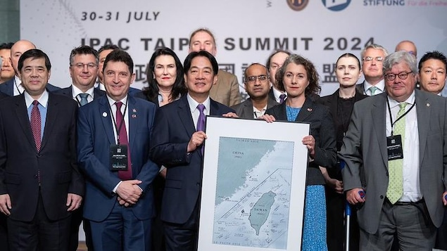

对中政策跨国议会联盟（IPAC）峰会称：联合国第2758号决议没有提及台湾未来，没有在国际法上确立“一个中国原则”，没有禁止台湾参与国际活动。中国对此表示强烈抗议。

对中政策跨国议会联盟（IPAC）峰会上月底在台湾举行。总统赖清德到会并发表讲话。
照片：Radio-Canada / 中华民国总统府
Yan Liang
对中政策跨国议会联盟（IPAC）上月底在台湾举行峰会，并正式接收台湾加入该联盟。直到今天，会议通过的一项联合决议带来的震动依然余波荡漾。
这次峰会将台湾问题列为主要讨论内容，最终发表一项联合决议，批评中国歪曲1971年通过的联合国2758号决议，指2758号决议没有在国际法上确立一中原则，没有提及台湾未来，也没有阻止台湾参与国际机构
等，还称2350 万台湾人无法有效参与联合国机构，这一问题必须紧急得到纠正
。
IPAC这项决议还承诺，作为第一步，与会议员们将寻求在所在国议会中通过台湾问题相关的决议。
台湾总统赖清德亲自到会并发表演讲，称与会者为正义之士
，强调这次会议是台湾历来人数最多的跨国国会议员访团
。他代表台湾人民感谢IPAC，称每当台湾受到来自中国威胁的时候，力挺台湾
。
中国从该联盟决定接受台湾加入并在台湾举办开始，表达了强烈不满与抗议。有报道称，中国使用不同方式试图阻止至少六个国家的议员前往台湾参与会议。
中国外交部以及国台办表示，IPAC由一群极端反华分子组成，在涉台问题上挑衅滋事，并称联合国2758号决议“充分反映、郑重确认了一个中国原则，其权威不容挑战”。
加拿大渥太华大学台湾研究中心共同主席史国良教授就此接受加广中文专访时表示，他最近仔细研读了1971年在中国成为联合国成员国问题上，各国的讨论发言，他还准备对这一问题做进一步的研究。
非常有意思，多年来，中国不断提及联合国2758号决议，也迫使我们仔细研读，探究它究竟说了些什么，没有说什么？IPAC这次做了一个重要的正确决定，所有的议员回到各国之后应该就台湾问题通过动议，纠正中国的说法。
IPAC由美国和英国等几位资深议员牵头，在2020年6月4日成立。其目的就是团结相同理念的民主国家，讨论如何与中国打交道，免于中国在政治、经济、社会层面的干预，并认为，只有如此民主国家才能维护基于规则的体系
。
目前它包括了英国、美国、加拿大、澳大利亚、日本、及欧盟等二十多个国家议员。
每次峰会，各国派遣两位不同党派议员到会。今年前往台湾与会的两位加拿大议员是魁北克党团的伊夫·佩隆 (Yves Perron) 以及独立议员王启荣（Kevin Vuong）。
而台湾民进党立委范云和民众党立委陈昭姿是该联盟的共同主席。
(IPAC在X推特上公布Model Resolution on 2758决议）
加拿大能为台湾做的最重要的事
史国良表示，加拿大一向非常支持台湾，比如去年，加拿大所在的七国集团共同就台湾问题发表决议。而上周，加拿大蒙特利尔号军舰（HMCS Montreal）穿过了台湾海峡，加拿大重申对自由、包容和安全的印太地区的承诺。事件引发中国的强烈不满和抗议。
加拿大和盟友能够为台湾做的最重要的事情就是明确声明，台湾问题是国际问题，台湾问题不是内政，以此保护台湾。而中国一直在努力，把台湾问题描绘成内政，甚至连奥运会上，中国也想尽一切办法要消除或是降低台湾在国际上的可见度。
他还表示，在保护台湾和维护台海和平方面，加拿大会一直扮演美国最佳配角，尽可能支持盟友，这是毋庸置疑的。
渥太华大学台湾研究所共同主席史国良教授（Scott Simon）。
照片：Radio-Canada / university of Ottawa
他认为，很多人会说，西方只是口头上说说保护台湾，但无论如何，发声很重要，明确我不同意你的态度，尤其是如果中国对台湾采取了任何行动，表态支持台湾就很重要了，这是让全球意识到，大家不同意中国在台湾问题上的立场和行动。
联合国第2758号决议
1971年10月25日的联合国的2785号决议称：
承认中华人民共和国政府的代表是中国在联合国组织的唯一合法代表，中华人民共和国是安全理事会五个常任理事国之一。决定恢复中华人民共和国的一切权利，承认它的政府代表为中国在联合国组织的唯一合法代表，并立即把蒋介石的代表从他在联合国组织及其所属一切机构中所非法占据的席位上驱逐出去。
史国良教授认为，联合国2875决议在用词上非常小心，当中没有提及台湾，甚至都没有提到驱逐中华民国。这是因为讨论过程中，许多国家表达了不舍，希望为台湾保留一个位置，等到有一天，台湾重回联合国。
他表示，多年以来，中国把这项决议作为一个中国原则
台湾是中国的一部分
等的依据，并不断压缩台湾参与国际社会的空间。但其实，联合国第2875决议中，没有这些内容。
而IPAC重新解读联合国这项决议以及成员国或者将陆续通过台湾相关决议，为保护台湾安全，以及台湾进一步参与国际机构与活动，打开了空间。
台湾有乌克兰一样的抵抗力
IPAC峰会在台湾举行也引发了岛内政坛一次不大不小的地震。作为目前立法会的第一大党，老牌国民党没有派代表出席。
台湾曾有媒体报道，国民党立委也受到了中国压力而缺席，但国民党批驳了这一说法。
按照IPAC的规定，必须有两个以上政党同意，才能够接受为会员国。最终台湾民进党成功联合了民众党，顺利加入。
在台湾生活过多年的史国良教授认为，国民党中的确有统派和亲中派，但不占大多数，毕竟国民党历史上也曾经抵抗共产党，包括朱立伦、侯友宜等都曾承诺，会保护中华民国对台湾的主权，保护她的民主制度。
他表示，俄国入侵乌克兰之前，乌克兰有大量民众亲俄，他们说俄语，认为与俄国保持良好关系很重要。但俄国一旦入侵，乌克兰民众迅速团结，同仇敌忾。
我相信，台湾民众也会像乌克兰人一样，一旦面对侵略者，会展现团结和抵抗力。这不仅仅是各政党的共识，也是大部分台湾民众的共识。
他还进一步分析说，中国目前还很可能优先使用非军事手段，改变台湾。比如，孤立台湾岛，等待国民党执政政策改变，持续施压试图瓦解国际盟友对台支持等。
而今年11月的美国大选，民主党哈里斯和特朗普代表的共和党的台湾立场，也会给局势带来一定变数。
Début du widget Widget. Passer le widget ?
📢 IPAC members pass resolution on 2758!
Almost 50 lawmakers from 24 countries commit to taking action in their respective parliaments. 🇹🇼#IPACTaipei24 #StandTogether pic.twitter.com/4nJ3OvZg2d
— Inter-Parliamentary Alliance on China (IPAC) (@ipacglobal) July 30, 2024
Fin du widget Widget. Retourner au début du widget ?Début du widget Widget. Passer le widget ?
We are so grateful to the many behind the scenes who made #IPACTaipei24 possible, especially the exceptional team at @MOFA_Taiwan.
🇹🇼🤝🌎#StandTogether under the #DemocraticUmbrella ☂️ pic.twitter.com/zfdK9G6Cxq
— Inter-Parliamentary Alliance on China (IPAC) (@ipacglobal) August 2, 2024
Fin du widget Widget. Retourner au début du widget ?Yan Liang文章来源于RCI:【分析】史国良教授：加拿大应清晰表明“台湾问题是国际问题，不是内政”